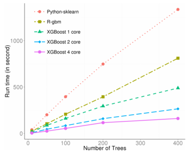
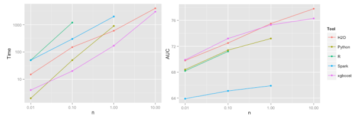

Principales améliorations
Outre son aspect algorithmique qui permet des paramétrages particuliers, XGBoost a également été conçue pour être une méthode d'apprentissage performante du point de vue de l'utilisation des ressources et de la parallélisation.
Parallélisation
Comme nous l'avons expliqué à
cette page, XGBoost va entraîner des arbres au fur et à mesure pour améliorer une métrique. Ainsi, il n'est pas possible de paralléliser l'entraînement des arbres, puisque l'arbre \(n\) va dépendre des arbres entraînés précédemment (que ce soit sur l'échantillon ou le poids des données).
Cependant, XGBoost se démarque en proposant à la place une solution pour paralléliser la création d'arbre en calculant des branches de manière indépendante (plus de détails sur les algorithmes qu'il est possible d'utiliser à cette fin peuvent être trouvés au lien suivant [4]).
À noter que cette parallélisation peut être réalisée par une utilisation multi-threads d'une machine ou bien par la répartition du calcul dans des clusters.
Utilisation mémoire
Pour le cas de données trop importantes (et si l'on ne dispose pas d'autres machines pour paralléliser les calculs et donc l'utilisation de la mémoire), XGBoost peut en le couplant à un stockage de données SSD réaliser une version dégradée de son algorithme qui va consister en des apprentissages partiels du modèles sur des bouts de données. Il est toujours possible d'utiliser l'algorithme en multi-threads pour chaque bout de données.
L'idée est ainsi de conserver les données sur le disque et de ne les monter que partiellement tour à tour en mémoire, on utiliser ainsi une mémoire dite « externe », pour faire tourner l'algorithme. Dans un article présentant les améliorations sur les plans théoriques et des performances de XGBoost [3], les auteurs de la méthode précisent que pour arriver à ce résultat, une structure de données « en blocs » est utilisée. On remarquera aussi que cette stratégie permet d'optimiser les accès au cache de mémoire.
Rapidité
Les différents éléments précédents (et en particulier la parallélisation), permettent à XGBoost d'être un algorithme rapide. Ceci est également accentué par le fait qu'une grande partie des modules sont écrits en C++, et que l'interfaçage avec les autres langages se fait principalement par des modules créés par dessus ces briques élémentaires. Ceci peut être observé sur le répertoire Github de XGBoost, où les volumes relatifs des langages sont les suivants :
C++ (41,9\%) Scala (16,3\%) R (14,4\%) Python (11,5\%) JAVA (7,4\%) Cuda (4,9\%) Autres (3,6\%)
On remarque donc que quasiment 50\% de l'
ensemble du code est directement écrit en C++, qui reste parmis les langages utilisés le moins gourmands en ressources et le plus rapide si bien utilisé.
Benchmarking des solutions
Plusieurs études ont été menée pour comparer les performances de XGBoost vis-à-vis d'autres solutions.
Le créateur de XGBoost a réalisé un comparatif de temps d'exécution entre son algorithme et d'autres algorithme courants sur le challenge Kaggle du boson de Higgs [5]. Les résultats de ce benchmarking sont repris à la Figure 12.

Fig. 12
Comparaison des temps d'apprentissage entre XGBoost et d'autres algorithmes importants de Machine Learning sur le challenge Kaggle du boson de Higgs [6]
Sur la Figure 12, les courbes
Python-sklearn et
R-gbm correspondent à des algorithmes GBM déjà existants sur ces plateformes, alors que XGBoost correspond à des essais avec l'algorithme nouvellement développé. L'influence du nombre de cœurs utilisés est également testé ici (tous les apprentissages se font à même paramétrage). On tire de ce graphe les conclusions suivantes :
Benchmarking sur des implémentations de Random Forest
Un autre Benchmarking a également visé à comparer les performances de XGBoost avec celles de différentes implémentations de Random Forest. Les résultats sont regroupés à la Figure 13.

Fig. 13
Comparaison des temps d'apprentissage et des résultats entre XGBoost et différentes implémentations de Random Forest [7]
On retrouve également sur ces figures des conclusionssions similaires à celles du premier benchmarking, à savoir :
Temps d'exécution
Sur tous les cas testés (sauf un cas limite où les temps sont tous faibles), XGBoost était déjà (2015) l'implémentation la plus rapide lors de cette étude.AUC
L'étude s'intéressait également aux performances via une mesure d'AUC. Ici, XGBoost au coude à coude avec l'implémentation de Random Forest de H2Oai, cette dernière étant même un peu meilleure sur des taux d'apprentissage plus élevés.
Quoiqu'il en soit, XGBoost apparaît dans ces différentes situtations comme un solution performante tant sur le point de vue des performances que sur celui des temps d'exécution.